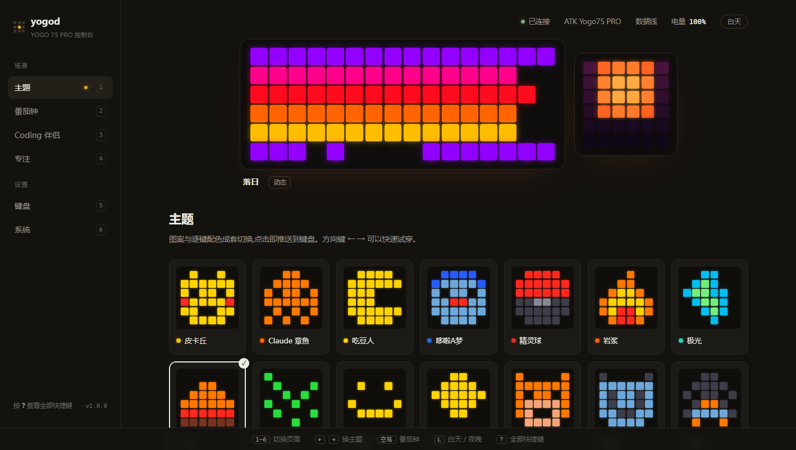
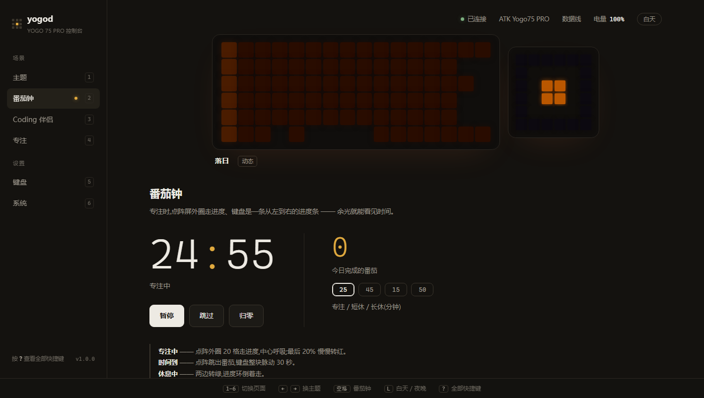
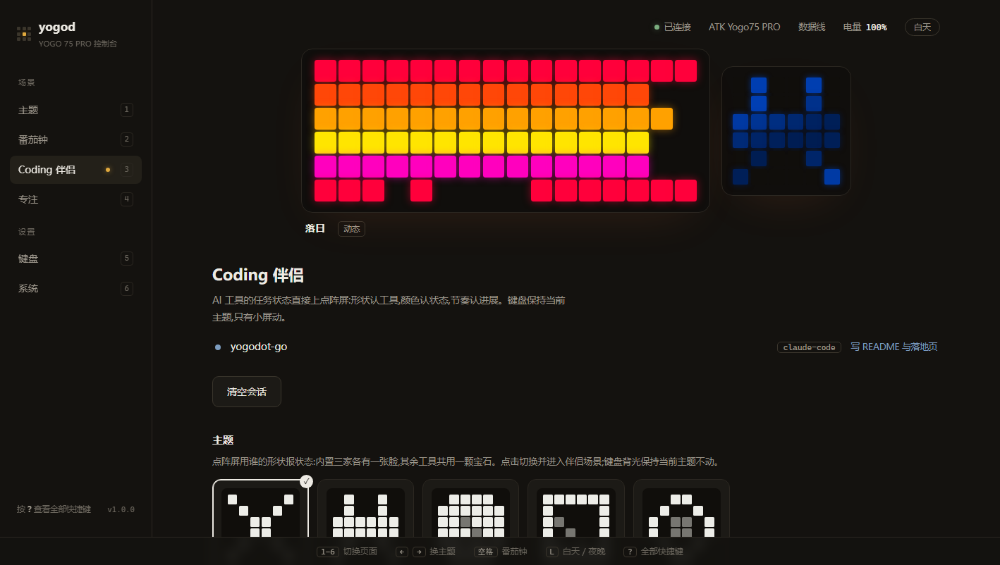
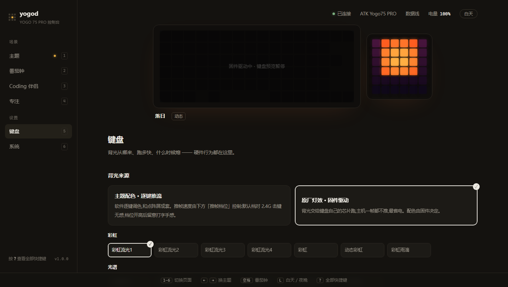

yogod 是 ATK YOGO 75 PRO 的第三方控制台：像素图案、成套主题、 番茄钟之外，还能让 AI 编程工具把「正在干活 / 等你点头」直接亮在键盘上。 绿色单文件，不碰固件，也不需要官方驱动。

单个 exe 内嵌控制台和图标，解压即用，全程离线。
皮卡丘、吃豆人、哆啦A梦、初音、EVA、我的世界、DeepSeek 鲸…… 逐键配色与 6×6 点阵成套切换，颜色按这把键盘的灯珠校过，不会发白。方向键 ← → 快速试穿。
AI 编程工具的任务状态直接上点阵屏：形状认工具、颜色认状态、节奏认进展。任何客户端接进来就有完整灯语。
点阵外圈走进度、键盘就是进度条，到点自动切场景提醒；专注模式一键全灭，退出恢复原样。
背光交给键盘自己的芯片跑，主机一帧不推，最省电。配色由固件决定。
锁屏几秒全灭、离开自动渐暗；推帧三档可调，默认档对 2.4G 击键无感。
键盘休眠、被官方 HUB 抢、有线 / 2.4G 热切换，都能自己恢复，不用重启。

点阵屏用形状报状态，键盘背光保持当前主题不动。内置 Claude Code / Codex / OpenCode 三张脸，其余工具共用一颗宝石兜底。
| 状态 | 颜色 | 动效 |
|---|---|---|
| 执行中 | 蓝 | 一道流光扫过形状，各家扫法不同 |
| 等你授权 | 橙 | 双跳心跳，一拍强一拍弱 |
| 等你补充 | 红 | 三连轻叩，一波弱过一波 |
| 完成 | 绿 | 亮一下，光晕从中心荡开，6 秒回空闲 |
| 出错 | 红 | 警示双闪：急两声、长一息，6 秒回空闲 |
| 空闲 | 白 | 慢呼吸，偶尔眨眼，吸气顶到纯白 |

主题配色逐键推流，和点阵成套；原厂灯效交给键盘芯片，零推帧最省电。一键切换。

只要一台 Windows 10/11 电脑；键盘走 2.4G 接收器或数据线。 蓝牙档位不行 —— 那种模式下键盘不开放灯控通道，固件如此，谁都一样。
从 Releases 拿 yogod-v*-windows-amd64.zip（约 3 MB），解到任意文件夹。
它会常驻右下角托盘并自动打开控制台。首次运行多半被 SmartScreen 拦一下（没买签名证书的正常反应）：「更多信息」→「仍要运行」，只问这一次。
「主题」页里看顺眼的点下去，键盘立刻换装。开机自启在托盘右键里勾。
不会。这个工具只做两件事：往键盘实时推画面、切换背光模式时写一次配置 —— 和官方驱动发给键盘的是同一类指令。固件一个字节都不会动，按键映射也完全不碰。想彻底还原，官方 ATK HUB 里有「恢复出厂」。
不需要。从控制台到 hook 再到帧引擎，所有通信都发生在 127.0.0.1 上，没有任何一个外网请求。
画面是推过去的，不是烧进去的：退出后键盘保持最后一帧，等它自己睡过去就回到出厂显示；下次启动软件会重新接管，不用手动补。
二选一。两边同时写同一把键盘，画面会互相覆盖、谁也显示不稳。yogod 被抢走后其实能自己夺回来，但日常还是建议只留一个。
先排查最普遍的三个原因：键盘没电、电源没开、档位停在蓝牙。插上线打字，能打说明键盘本身没事，切回 2.4G 档即可。还不行就去 README 的「键盘不动时先看这两个数」。
Go 重写版：把原项目藏在 Chrome 窗口里的 JS 动画引擎搬进进程内，goroutine 帧泵直接驱动键盘。主题、图案、调色、动画曲线全部与原 JS 逐字节对拍。零第三方依赖，不需要 Python 和 Chrome。